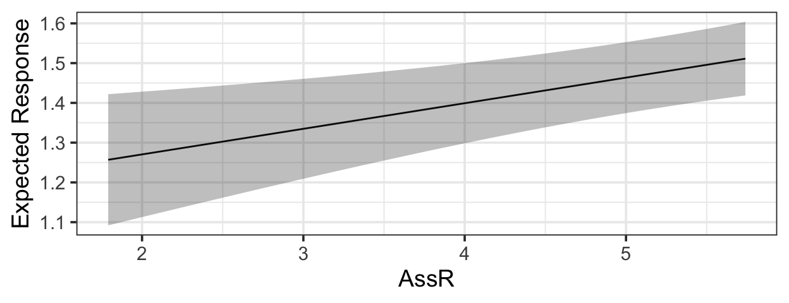

Rows: 117
Columns: 8
$ Name <chr> "Zuani", "Zuani", "Zorba", "Zorba", "Zorba", "Zomi", "Zomi", "Z…
$ Group <chr> "Apenheul", "Apenheul", "Wilhelma", "Wilhelma", "Wilhelma", "Fr…
$ Sex <chr> "Female", "Female", "Male", "Male", "Male", "Female", "Female",…
$ Age <dbl> 22, 22, 34, 34, 34, 15, 15, 14, 14, 14, 18, 18, 18, 18, 18, 12,…
$ fWHR <dbl> 1.475052, 1.321814, 1.581446, 1.479237, 1.390086, 1.340909, 1.2…
$ AssR <dbl> 5.36, 5.36, 2.36, 2.36, 2.36, 3.92, 3.92, 4.74, 4.74, 4.74, 2.6…
$ normDS <dbl> 1.430, 1.430, 2.341, 2.341, 2.341, 3.087, 3.087, 3.035, 3.035, …
$ weight <dbl> 24.0, 24.0, NA, NA, NA, NA, NA, 41.6, 41.6, 41.6, 38.0, 38.0, 3…1 Linear Regression
You probably learned something about linear regression in a previous course. Here, we briefly review the main concepts of simple linear regression and quickly expand our tool box to multiple regression (with both quantitative and categorical predictors).
1.1 Data
We will consider a small dataset from an article by J.S. Martin and colleagues, titled Facial width-to-height ratio is associated with agonistic and affiliative dominance in bonobos (Pan paniscus)
Notes: variable fWHR is the facial width-height ratio and AssR is the Assertiveness score of affiliative dominance. normDS is another dominance score.
What figures should we consider, to get a sense of the dataset and think about how we might model fWHR?
1.2 Preliminary Considerations
Just as we imagine before we start coding to create graphics, we ought to think before we start fitting models.
Traditional ways of interpreting statistical results are premised on the idea that you made a plan, got some data, fitted the model you planned, and want to draw conclusions.
If, instead, you got data, scrutinized the data, fitted lots of different models, and now want to report results from the one that fitted best…well, generally things tend to go wrong. This is especially true if you use the data to lead you from a more complex to a simpler model. As Harrell (2015) points out in section 4.3,
- Uncertainty underestimated (overconfidence: standard errors and confidence intervals too small; \(R^2\) too big)
- Spurious relationships look important and slope estimates are biased high
- If testing hypotheses, p-values too small
How can we avoid these problems? Some more insight will come when we consider model assessment and selection in future sections. For now, we need to remember:
Fitting and interpreting one well-considered, sensible model is prefereable to trying many things and then trying to choose among them later.
1.3 Response and Predictors
A regression model is our attempt to quantify how a response variable of interest changes when a set of predictor variables change.
So, to begin, we need to identify our (one) response variable – the thing we are most interested in measuring or predicting or describing or understanding.
Then, we need to identify a set of predictor variables that we expect to be associated with changes in the response. (If we are planning an experiment, they should be variables we can collect data on; if working with data already collected, they must be in or derived from the data available.)
How do we choose which predictors to include, and how many?
First, rely on experts and previous experience. If you know the context of the problem well, you have a good sense of the predictors that will be of interest. If you don’t, then you should consult experts (or published work on the topic).
There are also practical limits on the number of predictors you can reasonably consider, given a dataset.
1.3.1 Sample size and predictors
One important consideration, when planning a regression model, is: How many predictors can I reasonably include?
It depends on the size of the dataset: it takes several observations to get a good estimate of any statistics, so it makes sense that fitting a model with lots of predictors will require a bigger dataset. And if you try to fit too many, the chances of overfitting increase. Overfitting is when you model noise as well as signal, capturing in your model apparent relationships that actually exist only in the current dataset, not in reality.
For linear regression, Harrell (2015, Chapter 4.6) offers a rule of thumb: the number of parameters being estimated, \(p\), should be less than \(\frac{n}{10}\) or \(\frac{n}{20}\). To give just one standard rule of thumb, we should aim for \(p < \frac{n}{15}\). \(n\) is the sample size (number of rows in the dataset).
1.4 Simple linear regression, Residuals & Least squares
First, let’s review and consider a simple (one-predictor) linear regression model. Fit the model
slr <- lm(fWHR ~ AssR, data=bonobos)Extract the slope and intercept values:
coef(slr)(Intercept) AssR
1.30685287 0.02918242 Add the regression line to the plot:
gf_point(fWHR ~ AssR, data=bonobos) |>
gf_lm()summary(slr)
Call:
lm(formula = fWHR ~ AssR, data = bonobos)
Residuals:
Min 1Q Median 3Q Max
-0.31320 -0.11369 -0.01242 0.09008 0.49241
Coefficients:
Estimate Std. Error t value Pr(>|t|)
(Intercept) 1.30685 0.06283 20.801 <2e-16 ***
AssR 0.02918 0.01420 2.055 0.0421 *
---
Signif. codes: 0 '***' 0.001 '**' 0.01 '*' 0.05 '.' 0.1 ' ' 1
Residual standard error: 0.1689 on 115 degrees of freedom
Multiple R-squared: 0.03542, Adjusted R-squared: 0.02704
F-statistic: 4.223 on 1 and 115 DF, p-value: 0.042131.4.1 Using lm() to fit a linear regression in R
We use function lm() with a formula of the form y ~ x (and an input data = _____).
To view the result, we ask for a summary().
slr <- lm(fWHR ~ AssR, data = bonobos)
summary(slr)
Call:
lm(formula = fWHR ~ AssR, data = bonobos)
Residuals:
Min 1Q Median 3Q Max
-0.31320 -0.11369 -0.01242 0.09008 0.49241
Coefficients:
Estimate Std. Error t value Pr(>|t|)
(Intercept) 1.30685 0.06283 20.801 <2e-16 ***
AssR 0.02918 0.01420 2.055 0.0421 *
---
Signif. codes: 0 '***' 0.001 '**' 0.01 '*' 0.05 '.' 0.1 ' ' 1
Residual standard error: 0.1689 on 115 degrees of freedom
Multiple R-squared: 0.03542, Adjusted R-squared: 0.02704
F-statistic: 4.223 on 1 and 115 DF, p-value: 0.04213From this traditional on-screen output, we can fetch the information and estimates we need.
We can also “clean up” the output into a data table using broom::tidy():
broom::tidy(slr)# A tibble: 2 × 5
term estimate std.error statistic p.value
<chr> <dbl> <dbl> <dbl> <dbl>
1 (Intercept) 1.31 0.0628 20.8 8.83e-41
2 AssR 0.0292 0.0142 2.06 4.21e- 21.4.2 Equation of the fitted regression line
In the process above, we chose a response variable \(y\), a predictor \(x\), and estimated the slope and intercept of the line \(\beta_0\) and \(\beta_1\).
\[ y = \beta_0 + \beta_1 x\]
But the data don’t lie perfectly on the line, and we have too include that in our model, too. There is some error \(\epsilon\) in our model for the data, so we should keep track of it.
\[ y = \beta_0 + \beta_1 x + \epsilon\]
But \(\epsilon\) is not one number to be estimated – the amount of error is different for every data point! How can we express this mathematically?
1.4.3 Regression residuals = “errors”
First, we need a way to measure how far the model line is from the data, for every observation in the dataset. The residual for the ith observation is the observed response variable value from the data (\(y_i\)) minus the predicted response value on the regression line (\(\hat{y}_i\)). This will be the response variable value for the point on the line whose predictor (\(x\) value is the same as for the observed data point). These “residuals” are shown in red on the figure. (The numeric value of each residual is the length of its red line segment.)
How can we summarize this information? Let’s look at the distribution of the residuals:
gf_histogram(~resid(slr), bins = 15)Hmmm…looks pretty unimodal, and symmetric (except for a bit of right skew). It almost has that familiar bell shape…like a Normal distribution. This is a hint.
In linear regression, we model residuals with a normal distribution, with mean zero (the line should go through the “middle” of the points, and averaging over them all, our residual should be 0).
The standard deviation of the residuals depends on how far away the points are, on average, from the line. This value, the residual standard deviation \(\sigma\), must be estimated in each case.
R lm() summary output calls it “residual standard error” and lists it near the bottom of the summary. (This is a somewhat inaccurate name but we’re stuck with it.)
So now we can give a complete model equation. In general,
\[ y = \beta_0 + \beta_1 x + \epsilon,\] where
\[ \epsilon \sim N(0, \sigma)\]
Or, in our specific case with the Bonobos,
\[ y = 1.31 + 0.029 x + \epsilon, \text{ where } \epsilon \sim N(0, 0.169)\]
1.5 Multiple regression
Rarely does our response variable really depend on only one predictor. Can we expand our formulation to include more predictors? In R, it’s super easy:
mlr <- lm(fWHR ~ AssR + weight, data=bonobos)
coef(mlr)(Intercept) AssR weight
0.944790930 0.039888045 0.008644299 1.5.1 Choosing predictors
Notice that in this chapter, we are building up from a simpler model to a more complex one with more predictors. This is to reveal to you the mathematical machinery that lets us specify and fit the more complex models.
But this is not how to build a model in practice. Recall, we agreed to think carefully and choose a reasonable set of predictors to use at the outset, doing as much of the work as possible before even looking at the dataset. Our \(p < \frac{n}{15}\) rule gives a rough limit to the maximum number of parameters we can estimate. If we do otherwise, we have to be cautious and know all our conclusions are on much shakier ground.
1.5.2 Estimation
But…how did R come up with those estimates of the slope and intercept (and residual standard deviation) parameters?
In the simple linear regression case, it’s easy to visualize:

The best line is the one that makes the residuals the smallest (by going right through the middle of the points). OK, let’s be careful: some residuals are positive and some are negative, and we want the line that minimizes their magnitude. The traditional approach is to choose the slope that minimizes the sum of the squared residuals,
\[ SSE = \sum_{i=1}^{n} (y_i - \hat{y}_i)^2\]
How does this work when we have multiple predictors? It’s harder to draw, but just as easy to compute \(\hat{y}\) and thus the observed residuals \(e_i\).
1.5.3 Computing Predictions
Use the regression equation to compute predicted values for the three data points below:
# A tibble: 4 × 3
fWHR AssR weight
<dbl> <dbl> <dbl>
1 1.88 4.74 41.6
2 1.80 5.38 50.6
3 1.59 3.97 NA
4 1.55 4.87 38.5
1.6 Predictors with two categories
mlr2 <- lm(fWHR ~ AssR + weight + Sex, data = bonobos)
coef(mlr2)(Intercept) AssR weight SexMale
1.065420976 0.058435841 0.002257142 0.128484275 How does the model incorporate this covariate mathematically?
1.6.1 Predictors with more categories
gf_boxplot(fWHR ~ Group, data = bonobos)mlr3 <- lm(fWHR ~ AssR + weight + Sex + Group, data = bonobos)
coef(mlr3) (Intercept) AssR weight SexMale
1.007734691 0.064361973 0.003458979 0.124854271
GroupFrankfurt GroupPlanckendael GroupTwycross GroupWilhelma
0.037426358 -0.008464572 -0.112907589 0.011186724
GroupWuppertal
-0.004364826 How does the model incorporate this covariate mathematically?
1.7 Returning to the R Model Summary
There are several bits of information you should be able to extract from the summary() output R produces on a fitted linear regression model:
\(\beta\)s, Coefficient Estimates
\(\sigma\), labeled “residual standard error”
\(R^2\) (adjusted)
mlr3 <- lm(fWHR ~ AssR + weight + Sex + Group, data = bonobos)
summary(mlr3)
Call:
lm(formula = fWHR ~ AssR + weight + Sex + Group, data = bonobos)
Residuals:
Min 1Q Median 3Q Max
-0.38288 -0.09488 -0.02642 0.07196 0.48464
Coefficients:
Estimate Std. Error t value Pr(>|t|)
(Intercept) 1.007735 0.217585 4.631 2.05e-05 ***
AssR 0.064362 0.021158 3.042 0.0035 **
weight 0.003459 0.005547 0.624 0.5353
SexMale 0.124854 0.059278 2.106 0.0394 *
GroupFrankfurt 0.037426 0.074892 0.500 0.6191
GroupPlanckendael -0.008465 0.075407 -0.112 0.9110
GroupTwycross -0.112908 0.074779 -1.510 0.1364
GroupWilhelma 0.011187 0.085538 0.131 0.8964
GroupWuppertal -0.004365 0.071292 -0.061 0.9514
---
Signif. codes: 0 '***' 0.001 '**' 0.01 '*' 0.05 '.' 0.1 ' ' 1
Residual standard error: 0.1691 on 59 degrees of freedom
(49 observations deleted due to missingness)
Multiple R-squared: 0.2517, Adjusted R-squared: 0.1502
F-statistic: 2.48 on 8 and 59 DF, p-value: 0.021671.8 Predictions from the model
1.8.1 By Hand
The equation for the fitted model above is:
\[ y = \beta_0 + \beta_1x_1 + \beta_2x_2 + \beta_3I_{Male} + \beta_4I_{Frankfurt} + \beta_5I_{Planckendael} + \beta_6I_{Twycross} + \beta_7I_{Wilhelma} + \beta_7I_{Wuppertal} + \epsilon\]
where
- \(y =\)
- \(\beta_0=\)
- \(x_1=\)
- \(x_2=\)
- \(\beta_1, \beta_2, \beta_3 ...\) are:
- \(I_{Male} =\)
- \(I_{Frankfurt} =\)
- \(I_{Planckendael} =\) , etc.
- \(\epsilon=\)
1.8.1.1 Comprehension check:
What is the expected fWHR (according to this model) for a 30 kg female bonobo at the Wilhelma zoo?
1.8.2 Prediction Plots in R
We can ask R to compute predictions for all the data points in the real dataset.
bonobos <- bonobos |>
mutate(preds = predict(mlr3))Error in `mutate()`:
ℹ In argument: `preds = predict(mlr3)`.
Caused by error:
! `preds` must be size 117 or 1, not 68.Wait, what? This error is because the lm() function removes rows containing missing values from the dataset, so it computes only 68 residuals (for the complete cases in the data). This doesn’t match the 117 rows in the original data. We can solve the problem by omitting rows with missing values first. To be safe, we first select only the variables we need, so we don’t omit rows based on missing values in unused variables.
b2 <- bonobos |>
dplyr::select(fWHR, weight, AssR, Sex, Group) |>
na.omit() |>
mutate(preds = predict(mlr3))We have a full set of predictions!
But if we plot these predictions on a scatter plot of fWHR as a function of AssR, we do not get a straight line, because the predictions are also impacted by varying values of weight, Sex, and Group:
gf_point(fWHR ~ AssR, data = b2) |>
gf_line(preds ~ AssR, data=b2)But…we would really like a straight line that helps us visualize the meaning of the \(\beta\) (slope coefficient) for AssR. We can make predictions for a hypothetical dataset, in which AssR varies over a reasonable range, but the other predictors stay constant. This lets us see how AssR (and only AssR) affects the response, without contributions from other predictors. In choosing the values to include in hypothetical dataset, we often choose to hold variables constant at their most common or median values, but not blindly: also, avoid impossible or implausible variable combinations (for example, specifying that a person lives in the state of Michigan but the city of Chicago, or that they are a 5-year-old person with 4 children). In this case, to match the figures in the published paper, we are also going to vary the Sex - but generally you’d only allow one predictor to vary.
fake_data <- expand.grid(AssR = seq(from=1.8, to=5.7, by=0.05),
weight = 38.5,
Sex = c('Female', 'Male'),
Group = 'Wuppertal')
fake_data <- fake_data |>
mutate(preds = predict(mlr3, newdata = fake_data))
gf_line(preds ~ AssR, color = ~Sex, data=fake_data) |> gf_labs(y='Predicted\nfWHR')1.8.2.1 Comprehension checks:
- Should we overlay prediction-plot line(s) on the data scatter plot?
- How do you think the plot would look if we changed the constant predictor values?
- What is missing from this picture?
1.8.2.2 Shortcut
library(s245)
pred_plot(mlr3, 'AssR')
1.9 Why are we doing this again?
Why make prediction plots?
1.10 Shortcut Method - With Uncertainty
We saw before that pred_plot() makes it very easy for us to generate prediction plots showing what a (multiple regression) model says about the relationship between the response and one of the predictors:
library(s245)
pred_plot(mlr3, 'AssR') |>
gf_labs(y = 'Predicted fWHR')Note the custom axis label - otherwise you get a long, unwieldy default “Predictions from fitted model”
library(s245)
pred_plot(mlr3, 'Group') |>
gf_labs(y = 'Predicted fWHR')They look nice! But they should raise two questions:
Uncertainty:
Fixed values:
get_fixed(bonobos) |>
pander::pander()Quitting from lines 548-550 [unnamed-chunk-18] (lm1.rmarkdown) Error in if (class(data[, v]) == "character") ...: ! the condition has length > 1 Backtrace: 1. pander::pander(get_fixed(bonobos)) 2. s245::get_fixed(bonobos)
1.10.1 Anatomy of a Confidence Interval
pred_plot(mlr3, 'Sex') |>
gf_labs(y = 'Predicted fWHR')1.11 DIY Method
1.11.1 Creating a hypothetical dataset
We would like to create a hypothetical dataset where one predictor variable varies, and all the rest stay fixed. Let’s choose AssR. We use expand.grid():
fake_data <- expand.grid(AssR = seq(from=1.8, to=5.7, by=0.05),
weight = 40,
Sex = 'Female',
Group = 'Twycross')
glimpse(fake_data)Rows: 79
Columns: 4
$ AssR <dbl> 1.80, 1.85, 1.90, 1.95, 2.00, 2.05, 2.10, 2.15, 2.20, 2.25, 2.3…
$ weight <dbl> 40, 40, 40, 40, 40, 40, 40, 40, 40, 40, 40, 40, 40, 40, 40, 40,…
$ Sex <fct> Female, Female, Female, Female, Female, Female, Female, Female,…
$ Group <fct> Twycross, Twycross, Twycross, Twycross, Twycross, Twycross, Twy…Now, make predictions for our fake data.
preds <- predict(mlr3, newdata = fake_data, se.fit = TRUE)
fake_data <- fake_data |>
mutate(fitted = preds$fit,
se.fit = preds$se.fit)
glimpse(fake_data)Rows: 79
Columns: 6
$ AssR <dbl> 1.80, 1.85, 1.90, 1.95, 2.00, 2.05, 2.10, 2.15, 2.20, 2.25, 2.3…
$ weight <dbl> 40, 40, 40, 40, 40, 40, 40, 40, 40, 40, 40, 40, 40, 40, 40, 40,…
$ Sex <fct> Female, Female, Female, Female, Female, Female, Female, Female,…
$ Group <fct> Twycross, Twycross, Twycross, Twycross, Twycross, Twycross, Twy…
$ fitted <dbl> 1.149038, 1.152256, 1.155474, 1.158692, 1.161910, 1.165128, 1.1…
$ se.fit <dbl> 0.08347207, 0.08267088, 0.08187552, 0.08108616, 0.08030298, 0.0…How do we go from standard errors to confidence intervals? We can either do this before plotting, or while plotting. To do it before and add the results to the hypothetical dataset:
fake_data <- fake_data |>
mutate(CI_lower = fitted - 1.96*se.fit,
CI_upper = fitted + 1.96*se.fit)
glimpse(fake_data)Rows: 79
Columns: 8
$ AssR <dbl> 1.80, 1.85, 1.90, 1.95, 2.00, 2.05, 2.10, 2.15, 2.20, 2.25, 2…
$ weight <dbl> 40, 40, 40, 40, 40, 40, 40, 40, 40, 40, 40, 40, 40, 40, 40, 4…
$ Sex <fct> Female, Female, Female, Female, Female, Female, Female, Femal…
$ Group <fct> Twycross, Twycross, Twycross, Twycross, Twycross, Twycross, T…
$ fitted <dbl> 1.149038, 1.152256, 1.155474, 1.158692, 1.161910, 1.165128, 1…
$ se.fit <dbl> 0.08347207, 0.08267088, 0.08187552, 0.08108616, 0.08030298, 0…
$ CI_lower <dbl> 0.9854326, 0.9902210, 0.9949980, 0.9997632, 1.0045164, 1.0092…
$ CI_upper <dbl> 1.312643, 1.314291, 1.315950, 1.317621, 1.319304, 1.321000, 1…1.11.2 Making the plot
Now, we just need to plot!
gf_line(fitted ~ AssR, data=fake_data) |>
gf_labs(y='Predicted\nfWHR') |>
gf_ribbon(CI_lower + CI_upper ~ AssR, data = fake_data)If we wanted to figure out the CI bounds while plotting, we could calculate them on the fly like this:
gf_line(fitted ~ AssR, data=fake_data) |>
gf_labs(y='Predicted\nfWHR') |>
gf_ribbon((fitted - 1.96*se.fit ) + (fitted + 1.96*se.fit) ~ AssR,
data = fake_data)(which will look just the same).
1.11.3 Categorical predictors
What will be different if the predictor of interest is categorical?
hypothetical data:
plot:
fake_sex_data <- expand.grid(AssR = 4.51,
weight = 40,
Sex = c('Male', 'Female'),
Group = 'Twycross')
preds <- predict(mlr3, newdata = fake_sex_data, se.fit = TRUE)
fake_sex_data <- fake_sex_data |>
mutate(fitted = preds$fit,
se.fit = preds$se.fit)
gf_point(fitted ~ Sex, data=fake_sex_data) |>
gf_labs(y='Predicted fWHR') |>
gf_errorbar((fitted - 1.96*se.fit ) + (fitted + 1.96*se.fit) ~ Sex,
data = fake_sex_data)